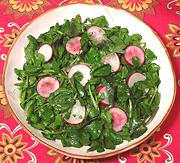

|
Watercress SaladSpain - North Coast - Ensalada de Berros | ||||
| Makes: Effort: Sched: DoAhead: |
4 salad ** 25 min Most |
This simple but very flavorful salad is best served in individual bowls because it needs a little "arrangement". If you just toss it, all the radishes head straight to the bottom of the bowl. | |||
|
|
10 6 ------ 1 2 1-1/2 1/4 1/2 1/2 1/3 |
oz oz --- cl T T c t t t |
Watercress Radishes -- Dressing Garlic Parsley Lemon Juice Olive Oil, ExtV Dijon Mustard Salt Pepper |
Prep - (25 min)
|